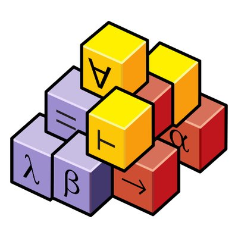

7CCSACTP: Computer-Assisted Theorem Proving
King's College London — Department of Informatics
Module Leader: Mohammad Abdulaziz
Interactive Theorem Prover: Isabelle/HOL

Module Overview:
This module introduces mechanical theorem proving using the Isabelle/HOL interactive theorem prover. Topics covered include basic Isabelle term and theorem syntax, forward and backward reasoning, substitution, natural number induction, case analysis, induction hypothesis generalisation, list recursion, structural induction on lists, Isabelle proof automation, algebraic datatypes, primitive recursion, and tree induction.
Textbooks & Obligatory Reading Material (Freely Available Online):
• Concrete Semantics: Tobias Nipkow & Gerwin Klein — concrete-semantics.org
• Isabelle/HOL Tutorial: Tobias Nipkow, Lawrence C. Paulson, & Markus Wenzel — isabelle.in.tum.de (PDF)
Assessment Structure:
• 50% Coursework: Formal proof projects & interactive Viva defense.
• 50% Exam: Paper-based written examination (requires conceptual understanding).
Week 1 | Week 2 | Week 3 | Week 4
7CCSACTP Computer-Assisted Theorem Proving — Department of Informatics, King's College London